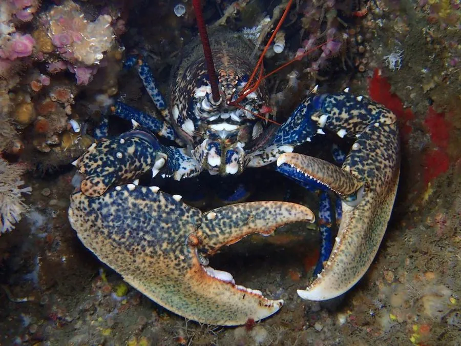

甲壳动物 · 动物界
欧洲龙虾 Homarus gammarus

欧洲大西洋沿岸的大型海螯虾，体色蓝黑带斑，螯足粗壮，是欧洲最重要的经济龙虾之一，生长缓慢。
- 分类
- 门节肢动物门纲软甲纲目十足目科海螯虾科属海螯虾属
- 栖息环境
- 东北大西洋和地中海的岩礁、泥沙海底，昼伏夜出
- 地理分布
- 欧洲大西洋沿岸、地中海和黑海
- 保护级别
- 暂无评估；部分地区资源受过度捕捞影响
物种志
欧洲龙虾体长可达 50 cm 以上，体重可达 5–6 kg，体色深蓝至蓝黑色，腹部和足上有浅色斑点，第一对步足特化成粗大的螯足，表面有颗粒。
它生活在东北大西洋、地中海和黑海的岩礁与泥沙海底，昼伏夜出，捕食贝类、蟹类、海胆和腐肉。欧洲龙虾生长缓慢，性成熟需要数年，雌虾抱卵约 9–12 个月，因此种群恢复能力较弱。它是欧洲重要的渔业资源，因过度捕捞、栖息地破坏和海水升温，部分地区资源下降。欧洲多国通过最小可捕尺寸、禁捕抱卵虾和人工放流等措施进行管理，养殖主要依靠孵化场培育幼虾后放流。欧洲龙虾对水质和底质要求较高，人工养殖难度较大。
形态与习性
- 食性捕食贝类、蟹类、海胆和腐肉
- 体长可达 50 cm 以上，体重 5–6 kg
- 体色深蓝至蓝黑色，腹部和足有浅色斑点
- 繁殖雌虾抱卵约 9–12 个月，幼体浮游后沉底
- 生长生长缓慢，性成熟需数年
- 管理最小可捕尺寸、禁捕抱卵虾和人工放流
趣味知识
- 欧洲龙虾的身体呈深蓝色，煮熟后才变成鲜红色。
- 雌虾抱卵将近一年，因此种群恢复速度很慢。
- 欧洲一些国家会孵化幼虾再放流，以补充野生资源。